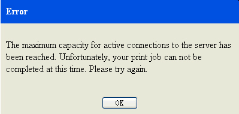

This topic shows how to print one or multiple topics in the help system.
About this task
In Navigation view, take the following steps to print one or multiple topics:
Procedure
- Click Print topics(
 ) on the toolbar to display the menu.
) on the toolbar to display the menu.- To print only the selected topic, click Print selected topic.
- To print the selected topic and all of its subtopics, click Print selected topic and all subtopics to open the Print Preview window.
- To change the page setup before printing, select in the preview window and modify settings.
- Click Print in the Print window. Restriction:
MaxTopics and maxConnections are limitations on quick print. They are parameters defined in preference for resource optimization before the system gets started.
When the number of topics you print exceeds that of maxTopics defined, you will see an Alert window.Figure 1. Alert window example
- Click Yes to carry on the print, if you are OK with the maxTopics limit.
- Click No to cancel the print.
When the number of printer connections exceeds that of maxConnections defined, you will see an Error window.Figure 2. Error window example- Click OK. And try again later.